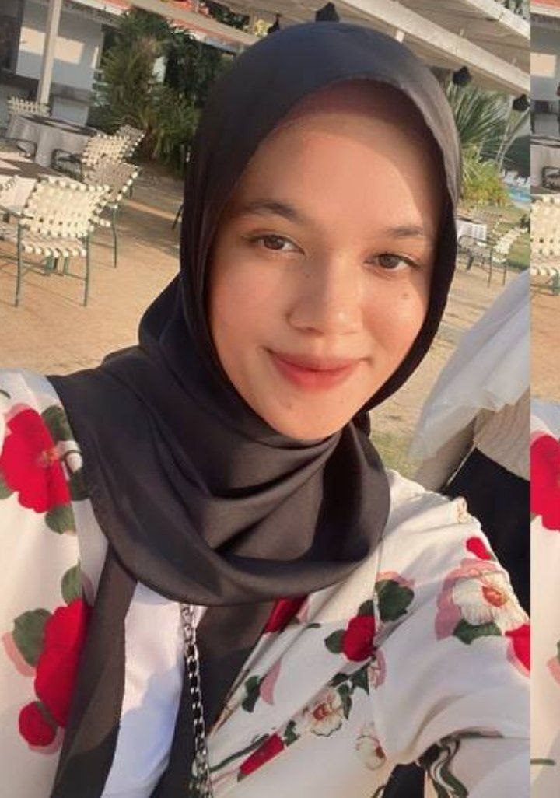

Assalamualaikum, my name is Nur Safura Izzat Binti Ruslee. This is my Individual Assignment IMD311 Personal website . I am 20 years old. Furthermore, my date of birth is September 20, 2003. I was born at Tungku Ja'afar Hospital, Seremban Negeri Sembilan, and grew up in Kuala Lumpur. I live in Kuchai Lama, Kuala Lumpur, and have seven siblings. For education. Moreover, my hobbies are writing poetry, listening to songs, reading novels, and hiking. However, I prefer to go hiking. This is because I like the view from the top of the hills and mountains, and I like the flora.
In addition, for education, at the age of 7–12, I attended primary school at Seri Setia National Primary School, Kuchai Lama, from 2010–2015. Meanwhile, for secondary school, I attended Seri Sentosa National Secondary School, Kuchai Lama, from 2016 to 2021. Initially, I was expected to finish in 2020, but due to the COVID pandemic that hit the country, I finished high school in 2021. In addition, these two schools are also located next to each other. After finishing secondary school, I continued my studies at the UITM Rembau Campus, Negeri Sembilan, in the field of information science studies in 2021–2024.
As for certification, I have a certificate from the Primary School Assessment Test (UPSR) in 2015. In addition, I will have a certificate in the Malaysian Education Certificate (SPM) in 2021. In addition, I also have a diploma certificate in the field of Information Science Studies,College Computing, Informatics and Mathematics (IM110).